%load_ext autoreload
%autoreload 2Niche reconstruction and spatial domain detection
Authors: Francesca Drummer, Marco Varrone
In this notebook we will cover:
- Graph construction and analysis of spatial transcriptomics data using Squidpy
- CellCharter
- BANSKY
# Data analysis and ML imports
import pandas as pd
import matplotlib.pyplot as plt
# single-cell imports
# import squidpy as sq
import scanpy as sc
from pathlib import Path
import os
import warnings
warnings.filterwarnings("ignore")Dataset
We will use the Xenium AD dataset from the previous notebooks here.
As a reminder the dataset consists of 6 coronal mouse brain slices from 2 different conditions (wildtype - ctrl vs TgCRND8 - AD) across 3 timepoints. In this practical, we additionally have information about cell types available in adata.obs['cell_types']. Please note that these annotation are not perfect. For example, there are quite some cells that could not be assigned to a cell type (NaN or “unkown”). These annotations have been made with on leiden clustering and marker genes reported in this document.
In this practical we aim to understand the differences of the mouse brain between the two conditions and across the timepoints using niches and spatial domains.
PATH = "/home/icb/francesca.drummer/1-Projects/"# load adata
adata = sc.read_h5ad(Path(PATH, 'xenium_mouse_ad_annotated_rotated.h5ad'))
adataAnnData object with n_obs × n_vars = 350209 × 347
obs: 'cell_id', 'transcript_counts', 'control_probe_counts', 'control_codeword_counts', 'unassigned_codeword_counts', 'total_counts', 'cell_area', 'nucleus_area', 'region', 'cell_labels', 'condition', 'time', 'batch_key', 'leiden_res0_25', 'leiden_res0_5', 'leiden_res1', 'cell_types', 'sample'
var: 'gene_ids', 'feature_types', 'genome'
uns: 'cell_types_colors', 'dea_leiden_res0_25', 'dendrogram_leiden_res0_25', 'leiden', 'leiden_res0_25_colors', 'leiden_res0_5_colors', 'leiden_res1_colors', 'neighbors', 'umap'
obsm: 'X_pca', 'X_umap', 'spatial'
obsp: 'connectivities', 'distances'# Creating a DataFrame from 'split', 'fov', and 'condition'
df = adata.obs[['condition', 'time', 'batch_key']]
value_counts = pd.DataFrame(df.values, columns=df.columns).value_counts()
print(value_counts)condition time batch_key
TgCRND8 17_9 2 60825
wildtype 13_4 5 59886
5_7 4 58683
TgCRND8 5_7 1 58681
wildtype 2_5 3 58230
TgCRND8 2_5 0 53904
Name: count, dtype: int64# Add "Unknown" as a category
adata.obs["cell_types"] = adata.obs["cell_types"].cat.add_categories("Unknown")
# Fill NaN values with "Unknown"
adata.obs["cell_types"] = adata.obs["cell_types"].fillna("Unknown")1. Cell neighborhood detection via graph construction
Spatial transcriptomics data can be represented as graphs with cells as nodes and edges as relations. Depending on the technology (imaging-based or sequencing-based) different assumptions can be made for the graph structure. Here we will explore graph construction and cell neighborhood analysis using the squidpy sq.gr.spatial_neighbors module on imaging-based data.
Information for graph reconstruciton for sequencing-based data can be found here.
For image-based technologies we construct a graph with coord_type=generic, meaning that the nodes / cells will preserve their spatial location and will not be re-arranged in a spatial grid. For generic graph approaches we can choose to set a fixed radius radius or number of neighbors to connect to (n_neighs).
Below we try both graph construction methods and give them a different key to add to the adata object.
del adata.uns['cell_types_colors']if 'cell_types_colors' in adata.uns:
del adata.uns['cell_types_colors']
sq.gr.spatial_neighbors(adata, n_neighs=10, coord_type="generic", key_added = 'neighs_based_spatial')
sq.pl.spatial_scatter(
adata,
shape=None,
library_key = 'batch_key',
color=["cell_types"],
connectivity_key="neighs_based_spatial_connectivities",
size = 10
)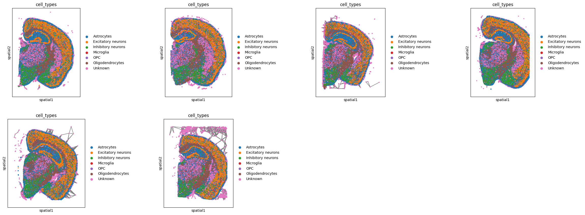
sq.gr.spatial_neighbors(adata, radius=0.3, coord_type="generic", key_added = 'radius_based_spatial')
sq.pl.spatial_scatter(
adata,
shape=None,
library_key = 'batch_key',
color="cell_types",
connectivity_key="radius_based_spatial_connectivities",
size=10,
)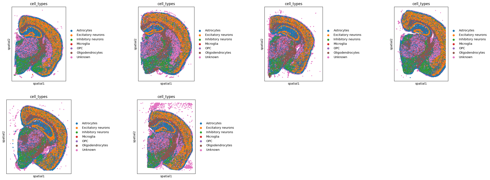
First differences across the graphs can be observed by visual inspection, e.i. the cells that are further away from the clear brain structures are connected in the clostest neighbor approach but unconnected in the radius-based approach. Some other differences are harder to observe like dependencies in the more dense connected regions. For this Squidpy provides a number of statistics to better the differences between the connectivities of cells.
Using the cell type information we can formulate some hypothesis from the data.
Task 1: Try out some analysis from Squidpy to identify distinctions between the graphs e.i. using the centrality score and neighborhood enrichment.
Example questions to answer could be: What are the average number of connections per cell type? Which cell types tend to cluster together?
sq.gr.nhood_enrichment(adata, cluster_key="cell_types", library_key = 'condition', connectivity_key = "neighs_based_spatial")
sq.pl.nhood_enrichment(
adata, cluster_key="cell_types", method="average", figsize=(5, 5)
) # `method` compute the hierarchic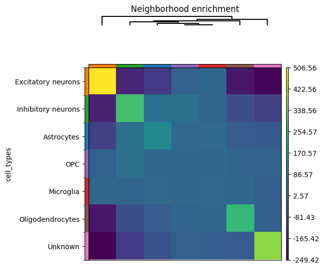
sq.gr.nhood_enrichment(adata, cluster_key="cell_types", library_key = 'condition', connectivity_key = "radius_based_spatial")
sq.pl.nhood_enrichment(
adata, cluster_key="cell_types", method="average", figsize=(5, 5)
) # `method` compute the hierarchic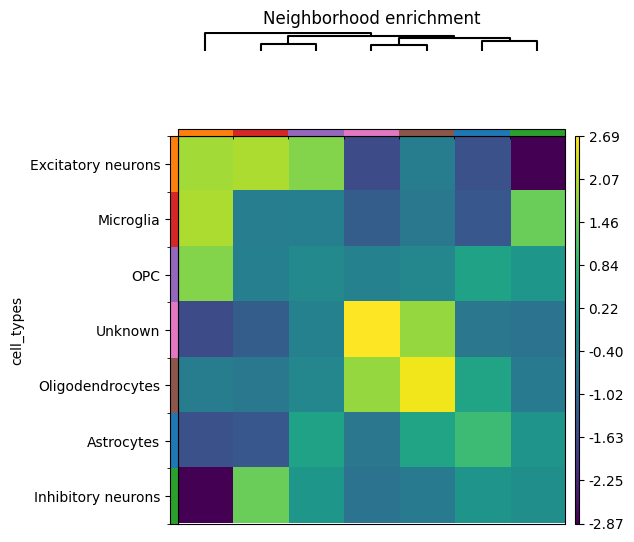
sq.gr.centrality_scores(adata, cluster_key = "cell_types", connectivity_key = "neighs_based_spatial")
sq.pl.centrality_scores(adata, cluster_key = "cell_types")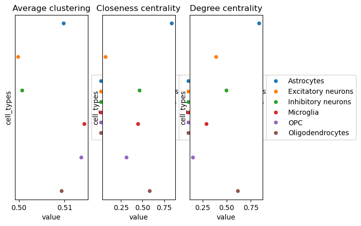
sq.gr.centrality_scores(adata, cluster_key = "cell_types", connectivity_key = "radius_based_spatial")
sq.pl.centrality_scores(adata, cluster_key = "cell_types")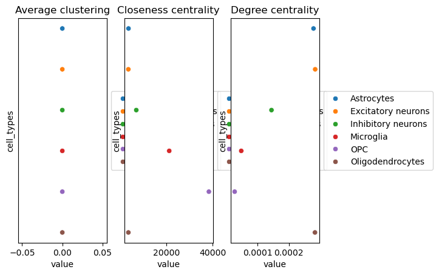
Task 2: How do the scores change when increasing or decreasing the number of neighbors n_neighs = 50 or radius=200?
Once we have a graph construction suitable for the data representation we can perform multiple differential analysis between the different conditions (TgCRND8 vs wildtype).
1.1.1 Comparing entire graphs
GraphCompass introduces two holistic graph comparison metrics:
- Westfeiler-Lehman Graph Kernels
- Filtration curves
Both methods compute a graph embedding that can be compared against one another. The graph embeddings are stored in adata.uns["wl_kernel"] and adata.uns["filtration_curves"] respectively.
if "unknown" not in adata.obs["cell_types"].cat.categories:
adata.obs["cell_types"] = adata.obs["cell_types"].cat.add_categories("unknown")
adata.obs["cell_types"] = adata.obs["cell_types"].fillna("unknown")library_key = "batch_key"
cluster_key = "cell_types"
condition_key = "condition"To lower the computational load we sub-sample the data. Let’s take a subsample from the different conditions but same time points.
# Creating a DataFrame from 'split', 'fov', and 'condition'
df = adata.obs[['condition', 'time']]
value_counts = pd.DataFrame(df.values, columns=df.columns).value_counts()
print(value_counts)condition time
TgCRND8 17_9 60825
wildtype 13_4 59886
5_7 58683
TgCRND8 5_7 58681
wildtype 2_5 58230
TgCRND8 2_5 53904
Name: count, dtype: int64sub_adata = adata[adata.obs['time'] == '5_7']
sub_adataView of AnnData object with n_obs × n_vars = 117364 × 347
obs: 'cell_id', 'transcript_counts', 'control_probe_counts', 'control_codeword_counts', 'unassigned_codeword_counts', 'total_counts', 'cell_area', 'nucleus_area', 'region', 'cell_labels', 'condition', 'time', 'batch_key', 'leiden_res0_25', 'leiden_res0_5', 'leiden_res1', 'cell_types', 'sample'
var: 'gene_ids', 'feature_types', 'genome'
uns: 'dea_leiden_res0_25', 'dendrogram_leiden_res0_25', 'leiden', 'leiden_res0_25_colors', 'leiden_res0_5_colors', 'leiden_res1_colors', 'neighbors', 'umap', 'neighs_based_spatial_neighbors', 'radius_based_spatial_neighbors', 'cell_types_centrality_scores'
obsm: 'X_pca', 'X_umap', 'spatial'
obsp: 'connectivities', 'distances', 'neighs_based_spatial_connectivities', 'neighs_based_spatial_distances', 'radius_based_spatial_connectivities', 'radius_based_spatial_distances'1.1.1.1 Westfeiler-Lehman Graph Kernels
gc.tl.wlkernel.compare_conditions(
adata=sub_adata,
library_key=library_key,
cluster_key=cluster_key,
compute_spatial_graphs=True,
kwargs_spatial_neighbors={
'coord_type': 'generic',
'delaunay': True,
}
)Computing spatial graphs...100%|██████████| 1000/1000 [00:02<00:00, 356.64/s]
100%|██████████| 1000/1000 [00:02<00:00, 367.18/s]Defining node features...100%|██████████| 2/2 [07:59<00:00, 239.95s/it]
INFO:root:Continuous node features provided, using CONTINUOUS propagation scheme.Computing Wasserstein distance between conditions...control_group="normal" # reference group
metric_key="wasserstein_distance"
method="wl_kernel"gc.pl.wlkernel.compare_conditions(
adata=sub_adata,
library_key=library_key,
condition_key=condition_key,
control_group=control_group,
metric_key=metric_key,
method=method,
figsize=(3,5),
dpi=100,
)1.1.1.2 Filtration curves
gc.tl.filtration_curves.compare_conditions(
adata=sub_adata,
library_key=library_key,
cluster_key=cluster_key,
condition_key=condition_key,
compute_spatial_graphs=False,
)node_labels=["Astrocytes", "Microglia", "Oligodendrocytes"] # node labels (e.g. cell types) we are interested in visualising
metric_key="filtration_curves"gc.pl.filtration_curves.compare_conditions(
adata=adata,
node_labels=node_labels,
metric_key=metric_key,
palette="Set2",
dpi=100,
figsize=(20,6),
right=4, # to shorten the x-axis and improve readability
)2. Spatial Domain detection with CellCharter
import scvi
import scanpy as sc
from pathlib import Path
import matplotlib.pyplot as plt
import squidpy as sq
import numpy as np
import cellcharter as cc
import gdown
import os
import logging
logger = logging.getLogger('pytorch_lightning.utilities.rank_zero')
logger.setLevel(logging.ERROR)scvi.settings.seed = 12345INFO: Seed set to 12345
INFO:lightning.fabric.utilities.seed:Seed set to 12345PATH = "/home/varrone/work_curnagl/Projects/ELIXIR-SCO-spatial-omics/day_3/practical_4/data/anndata"Let’s reload the data. In this way you can see what is required for the analysis independently of the analyses in the previous sections.
# load adata
adata = sc.read_h5ad(Path(PATH, 'xenium_mouse_ad_annotated_rotated.h5ad'))
adataAnnData object with n_obs × n_vars = 350209 × 347
obs: 'cell_id', 'transcript_counts', 'control_probe_counts', 'control_codeword_counts', 'unassigned_codeword_counts', 'total_counts', 'cell_area', 'nucleus_area', 'region', 'cell_labels', 'condition', 'time', 'batch_key', 'leiden_res0_25', 'leiden_res0_5', 'leiden_res1', 'cell_types', 'sample'
var: 'gene_ids', 'feature_types', 'genome'
uns: 'cell_types_colors', 'dea_leiden_res0_25', 'dendrogram_leiden_res0_25', 'leiden', 'leiden_res0_25_colors', 'leiden_res0_5_colors', 'leiden_res1_colors', 'neighbors', 'umap'
obsm: 'X_pca', 'X_umap', 'spatial'
obsp: 'connectivities', 'distances'We have the condition and time labels, but we don’t have a single label as an identifier for the samples.
We will create a new label sample that will be the concatenation of the condition and time labels.
adata.obs['sample'] = adata.obs['condition'].astype(str)+'_'+adata.obs['time'].astype(str)
adata.obs['sample'] = adata.obs['sample'].astype('category')There may be cells with very low counts. We will filter them out.
sc.pp.filter_cells(adata, min_counts=3)I have already run the cluster stability analysis using 3 layers of neighbors, as it may take too long for this practical session. (It took 25 minutes on a GPU).
The cluster stability analysis works by running clustering multiple times for every possible number of clusters and measuring the similarity (Adjusted Rand Index) between similar numbers of clusters.
We can download the model, plot the stability curve and the look for the peak(s) to identify the optimal number of clusters.
# gdown.download('https://drive.google.com/file/d/18A9UszEYyIOwC7v7ShBqQulCUKLFlQd7/view?usp=sharing', output=os.path.join(PATH, f'autok_l3.zip'), fuzzy=True)#!unzip -n -d {PATH} {os.path.join(PATH, f'autok_l3.zip')}autok = cc.tl.ClusterAutoK.load(Path(PATH, f'autok_l3'))
cc.pl.autok_stability(autok)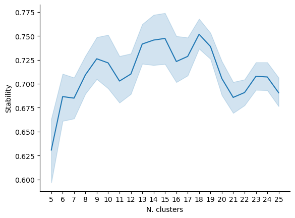
Here we don’t see a clear peak, but we can see that the highest stability is for 18 clusters.
We will use 18 clusters for the clustering analysis.
We could use the clustering model generated during the stability analysis, but we will fit a new clustering model to let you see the process.
2.1 Dimensionality reduction
First, we need to run the dimensionality reduction. We will use scVI for this.
Make sure that adata.X contains count data, as it is required by scVI.
In some tutorials you will see that the count data is stored in an AnnData layer called counts. Here we will use the X layer.
scvi.model.SCVI.setup_anndata(
adata,
#layer="counts"
)INFO:jax._src.xla_bridge:Unable to initialize backend 'cuda':
INFO:jax._src.xla_bridge:Unable to initialize backend 'rocm': module 'jaxlib.xla_extension' has no attribute 'GpuAllocatorConfig'
INFO:jax._src.xla_bridge:Unable to initialize backend 'tpu': INTERNAL: Failed to open libtpu.so: libtpu.so: cannot open shared object file: No such file or directoryLOAD_MODEL = TrueWe set the parameters of the neural network. Here we use 1 layer and an embedding size of 10.
These are very common parameters, but you can play with them to see how they affect the results.
if LOAD_MODEL:
os.makedirs(os.path.join(PATH, 'scvi_model'), exist_ok=True)
gdown.download('https://drive.google.com/file/d/1IDA_VReiI_elV055MSPa03EJNy1_OEks/view?usp=sharing', output=os.path.join(PATH, 'scvi_model', 'model.pt'), fuzzy=True)
model = scvi.model.SCVI.load(os.path.join(PATH, 'scvi_model'), adata=adata)
else:
model = scvi.model.SCVI(
adata,
n_layers=1,
n_latent=10,
use_layer_norm="both",
use_batch_norm="none",
)
model.train(early_stopping=True, enable_progress_bar=True)Downloading...
From: https://drive.google.com/uc?id=1IDA_VReiI_elV055MSPa03EJNy1_OEks
To: /home/varrone/work_curnagl/Projects/ELIXIR-SCO-spatial-omics/day_3/practical_4/data/anndata/scvi_model/model.pt
100%|██████████| 4.08M/4.08M [00:00<00:00, 97.8MB/s]INFO File
/home/varrone/work_curnagl/Projects/ELIXIR-SCO-spatial-omics/day_3/practical_4/data/anndata/scvi_model/mod
el.pt already downloaded To make sure that the training has converged, we can plot the training history.
Here we is important to focus on the (validation) reconstruction loss. This shows how well the model is able to reconstruct the original data.
fig, axes = plt.subplots(ncols=3, figsize=(10, 5))
metrics = ["elbo", "reconstruction_loss", "kl_local"]
for ax, metric in zip(axes, metrics):
ax.plot(
model.history[f"{metric}_train"],
label="train",
color="darkgreen",
linewidth=1.25
)
ax.plot(
model.history[f"{metric}_validation"],
label="validation",
color="firebrick",
linewidth=1.25
)
ax.legend()
ax.set_title(metric)
plt.tight_layout()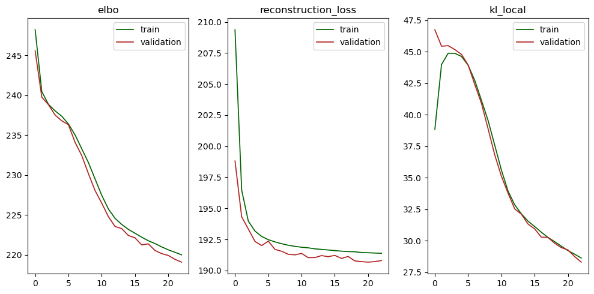
We extract the latent representation of the data.
adata.obsm['X_scVI'] = model.get_latent_representation(adata).astype(np.float32)2.2 Neighborhood aggregation
Until now, all the analyses have been done ignoring the spatial information.
Now we will use the spatial information to perform the clustering.
First, we need to create a network where cells are connected if they are close to each other using the Delaunay triangulation.
sq.gr.spatial_neighbors(adata, library_key='sample', coord_type='generic')sq.pl.spatial_scatter(
adata,
shape=None,
library_key='sample',
library_id=adata.obs['sample'].cat.categories[0],
color="sample",
size=1,
figsize=(10,10),
connectivity_key="spatial_connectivities",
ncols=1
)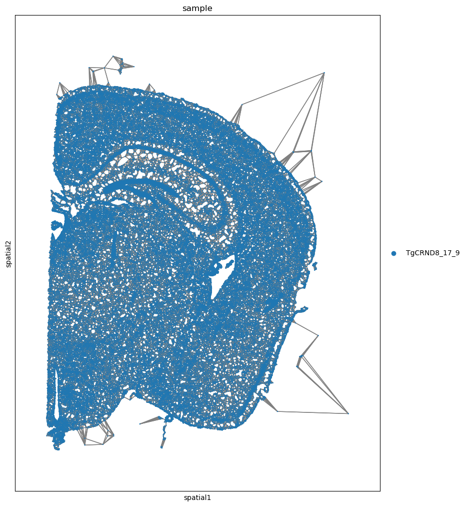
As you can see, the Delaunay triangulation generates very long edges for a few cells.
The most appropriate approach would be to estimate the most biologically relevant distance between cells and use it to remove the edges longer than that distance.
A quick alternative solution is that, since those long edges are sort of outlines, the measure the 99th percentile of the edge lengths and remove the edges longer than that distance.
This process will lead to some isolated cells, but that’s not a problem.
sq.gr.spatial_neighbors(adata, library_key='sample', coord_type='generic', percentile=99)sq.pl.spatial_scatter(
adata,
shape=None,
library_key='sample',
library_id=adata.obs['sample'].cat.categories[0],
color="sample",
size=1,
figsize=(10,10),
connectivity_key="spatial_connectivities",
ncols=1
)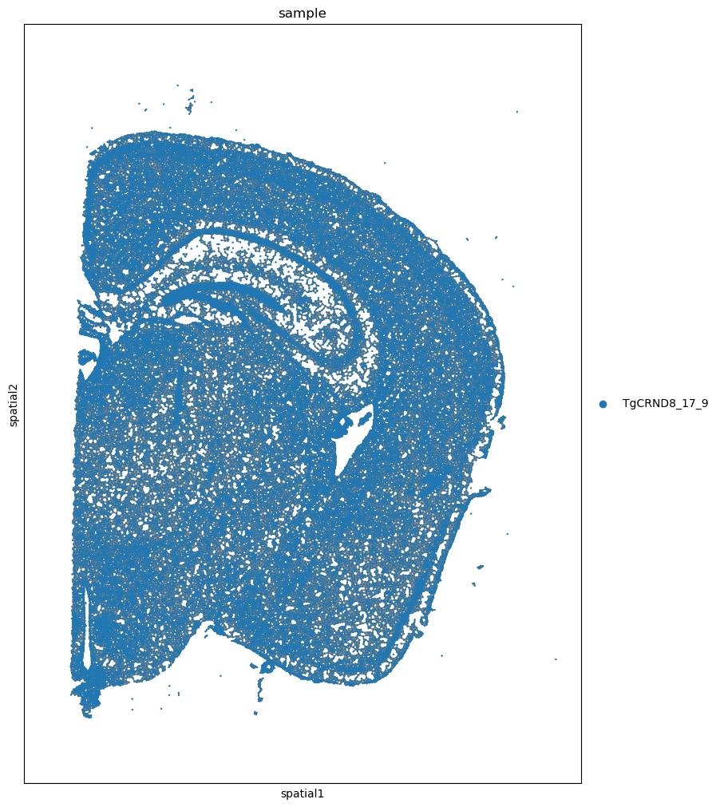
We construct the neighborhood aggregated representation by combining every cell’s features with the ones of first 3 layers of neighbors.
We will use the scVI latent representation as features and the new features will be stored in adata.obsm['X_cellcharter'].
While X_scVI contains 10 features, X_cellcharter will contain 10*(n_layers+1)=40 features.
cc.gr.aggregate_neighbors(adata, n_layers=3, use_rep='X_scVI', out_key='X_cellcharter', sample_key='sample')100%|██████████| 6/6 [00:05<00:00, 1.01it/s]2.3 Clustering
Finally, let’s cluster the cells and find their spatial domains.
gmm = cc.tl.Cluster(n_clusters=18, random_state=12345)
gmm.fit(adata, use_rep='X_cellcharter')
adata.obs['spatial_domain'] = gmm.predict(adata, use_rep='X_cellcharter')Epoch 51: 100%|██████████| 1/1 [00:00<00:00, 1.81it/s, nll=11.10]
Predicting DataLoader 0: 100%|██████████| 1/1 [00:00<00:00, 4.98it/s]We can now plot domains and cell types back to back
if 'spatial_domain_colors' in adata.uns:
del adata.uns['spatial_domain_colors']
sq.pl.spatial_scatter(
adata,
shape=None,
library_key='sample',
color=["spatial_domain", "cell_types"],
size=1,
figsize=(10,10),
title=np.repeat(adata.obs['sample'].cat.categories, 2),
ncols=2
)
2.4 Downstream analyses
After seeing how we can obtain the spatial domains, let’s load the domains from the ClusterAutoK that have been computed in advance.
In this way, we are going to have all the same results, which will make it easier for the discussion.
adata.obs['spatial_domain_18'] = autok.predict(adata, use_rep='X_cellcharter', k=18)if 'spatial_domain_18_colors' in adata.uns:
del adata.uns['spatial_domain_18_colors']
sq.pl.spatial_scatter(
adata,
shape=None,
library_key='sample',
color=["spatial_domain_18", "cell_types"],
size=1,
figsize=(10,10),
title=np.repeat(adata.obs['sample'].cat.categories, 2),
ncols=2
)
We can see that the domains are different from the ones obtained before, but only slightly.
As you can see, domains tend to correspond to areas with a similar composition of cell types.
This is not always true, because there are also areas, like the cortex layers, that seem to have similar composition of cell types.
By relying directly on gene expression rather than cell type labels, CellCharter is able to identify domains with similar cell type composition, but with those cell types being different transcriptionally.
This is because, even within the same cell type, there can be differences in the transcriptional profile.
Can we quantify this more directly?
The cell type enrichment measures the likelihood of a cell type being found in a domain compared to random chance.
Domains with similar cell type enrichment are likely to be separated into different domains because those same cell types have different transcriptional profiles.
We are not going to test this here.
cc.gr.enrichment(
adata,
group_key='spatial_domain',
label_key='cell_types',
)
cc.pl.enrichment(
adata,
group_key='spatial_domain',
label_key='cell_types',
dot_scale=9
)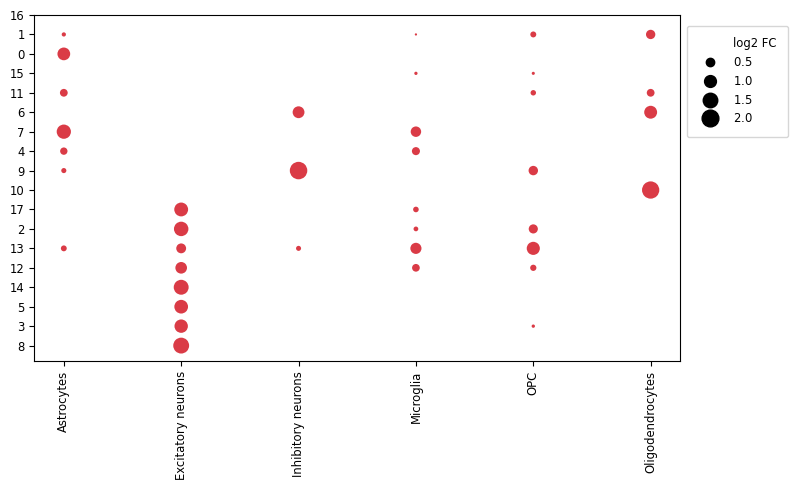
The Allen Brain Atlas provides images and annotation of mouse brain samples at multiple depths.
Choose one of the six samples, go to the atlas and try to find the image that better matches the regions shown by CellCharter.
1. Which of the 132 images is the closest one? 2. After identifying the closest image, try to match the domains obtained with the annotated regions in the atlas. 3. Do you find anatomical differences between the two conditions? are there differences in spatial domain compositions? Are there unique domains in one of the two conditions (Alzheimer vs wildtype)? - Focus, in particular on comparing samples from mice of the same age. - If you find difference between the two samples, what do you think is the cause?
Now, save the spatial domains corresponding to 9 and 23 clusters into the adata.obs column spatial_domain_9 and spatial_domain_23.
if 'spatial_domain_18_colors' in adata.uns:
del adata.uns['spatial_domain_18_colors']
sq.pl.spatial_scatter(
adata,
shape=None,
library_key='sample',
color=["spatial_domain_9", "spatial_domain", "spatial_domain_23"],
size=1,
figsize=(10,10),
title=np.repeat(adata.obs['sample'].cat.categories, 3),
ncols=3
)
The three levels of clustering form a sort of hierarchical structure.
9-cluster domains tend to separate into subdomains in the 18 clusters, and so on.
Go back to the Allen Brain Atlas and look if some of the hierarchical structure is reflected in the atlas.
Shape characterization
Now, we are going to look at the shapes of the domains we obtained.
We first find the local components of the domains. This is done by first finding the connected components of the spatial graph.
cc.gr.connected_components(adata, cluster_key='spatial_domain_18', min_cells=100)# Hackfix: squidpy's spatial_scatter has some issues with categorical data with NaNs.
adata.obs['component_tmp'] = adata.obs['component'].astype('str')if 'component_tmp_colors' in adata.uns:
del adata.uns['component_tmp_colors']
sq.pl.spatial_scatter(
adata[(adata.obs['sample'].isin(['TgCRND8_17_9', 'TgCRND8_2_5']))],
shape=None,
library_key='sample',
color=["component_tmp", "spatial_domain_18"],
size=1,
figsize=(10,10),
title=np.repeat(['TgCRND8_17_9', 'TgCRND8_2_5'], 2),
ncols=2
)... storing 'component_tmp' as categorical
Then draw a boundary around every component
cc.tl.boundaries(adata, alpha_start=10)from cellcharter_utils.utils import plot_boundaries, plot_shape_metricsplot_boundaries(adata, sample='wildtype_5_7', show_cells=True, cells_radius=10)INFO Using 'datashader' backend with 'None' as reduction method to speed up plotting. Depending on the
reduction method, the value range of the plot might change. Set method to 'matplotlib' do disable this
behaviour.
INFO alpha component of given RGBA value for outline color is discarded, because outline_alpha takes precedent.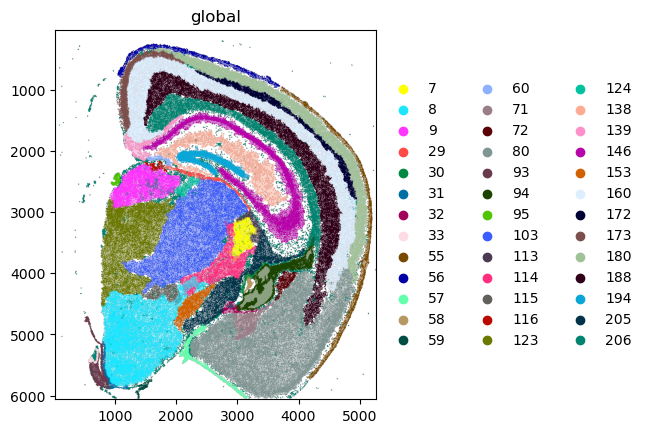
And finally, by computing some shape metrics that we will use to compare the domains.
cc.tl.curl(adata)
cc.tl.linearity(adata)Let’s look at the shape metrics of one of the cortex layers, domain 8.
plot_shape_metrics(adata, cluster_key='spatial_domain_18', figsize=(6,3), cluster_id=8, metrics=['curl', 'linearity'])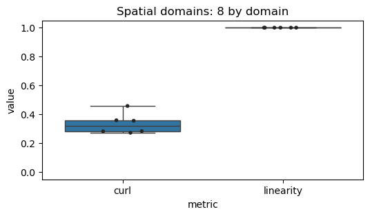
Look at the spatial domain 0. - Is it going to have lower, same or higher linearity than domain 8? - What about curl?
After you have answered, plot the shape metrics for domain 0 and check if it matches your expectations.
Tip: you can pass multiple cluster ids to plot_shape_metrics in the form of a list to plot multiple domains at once.
Look at spatial domain 12. - What do you expect to see in terms of curl and linearity? - What about elongation?
After answering, compute the elongation and compare the shape metrics for domains 8 and 12.
You can check CellCharter’s documentation for the elongation metric.
3. BANKSY
In this notebook we are using the Python implementation of BANSKY.
We run BANKSY on a example section, select a section that you find interesting.
adata_section = adata[(adata.obs['time'] == '5_7') & (adata.obs['condition'] == 'wildtype')]
adata_sectionView of AnnData object with n_obs × n_vars = 58683 × 347
obs: 'cell_id', 'transcript_counts', 'control_probe_counts', 'control_codeword_counts', 'unassigned_codeword_counts', 'total_counts', 'cell_area', 'nucleus_area', 'region', 'cell_labels', 'condition', 'time', 'batch_key', 'leiden_res0_25', 'leiden_res0_5', 'leiden_res1', 'cell_types', 'sample'
var: 'gene_ids', 'feature_types', 'genome'
uns: 'dea_leiden_res0_25', 'dendrogram_leiden_res0_25', 'leiden', 'leiden_res0_25_colors', 'leiden_res0_5_colors', 'leiden_res1_colors', 'neighbors', 'umap'
obsm: 'X_pca', 'X_umap', 'spatial'
obsp: 'connectivities', 'distances'adata_section.obsm['spatial'][:,0]ArrayView([ 834.40947266, 854.25923462, 4259.28774414, ...,
4623.79787598, 4627.65275879, 4577.76008301])## add x and y coordinate to .obs (needed for plot later)
adata_section.obs['x'] = adata_section.obsm['spatial'][:, 0]
adata_section.obs['y'] = adata_section.obsm['spatial'][:, 1]from banksy_utils.load_data import load_adata, display_adata
from banksy_utils.filter_utils import normalize_total, filter_hvg, print_max_min
# Normalizes the AnnData object
adata_section = normalize_total(adata_section)--- Max-Min before normalization -----
Displaying max and min of Dataset
Max: 136.0, Min: 0.0
--- Max-Min after normalization -----
Displaying max and min of Dataset
Max: 222.99998474121094, Min: 0.0
BANSKY unifies spatially informed cell type and domain segmentation. In this notebook we will focus on the domain segmentation part.

The idea is to create a representation of a cell using 1) its own transcriptomic profile (purple) and 2) local microenvironment (red + light pink). The local microenvironment is represented through a pair of spatial kernels that represent the mean gene expression of the local microenvironment (red) and its gradient calculated with the azimuthal Gabor filter (AGF) (light pink).
The relative contribution of the microenvironment is captured by \(\lambda\). Smaller settings of \(\lambda\) decrease the influence of the cells within the microenvironment (\(\lambda = 0\) reduces to nonspatial informed clustering). \(G(r)\) is a radially symmetric Gaussian kernel that decays from magnitude 1 at distance = 0.
The main BANSKY algorithm requires:
- Creating a kNN graph by setting a spatial number of neighbords
num_neighbors(k_geom) parameter. - Assigning weights to the edges of the conected spatial graph. By default, we use the
gaussian decayoption, where weights decay as a function of distance to the index cell with \(\sigma\)= sigma. - Defining whether to use the Azumithal Gabor Filter kernel (
max_m = 1) or just the mean expression (max_m = 0).
First, we set the required parameters.
coord_keys = ('x', 'y', 'spatial')
# set parameters
plot_graph_weights = True
k_geom = 15 # number of neighbors
max_m = 1 # azumithal transform up to kth order
nbr_weight_decay = "scaled_gaussian" # can also be "reciprocal", "uniform" or "ranked"Construct the \(k_{geom}\)-NN graph
from banksy.main import median_dist_to_nearest_neighbour
# Find median distance to closest neighbours, the median distance will be `sigma`
nbrs = median_dist_to_nearest_neighbour(adata_section, key = coord_keys[2])
Median distance to closest cell = 13.144794274179642
---- Ran median_dist_to_nearest_neighbour in 0.43 s ----
Generate spatial weights from distance
Here, we generate the spatial weights using the gaussian decay function from the median distance to the k-th nearest neighbours as specified earlier.
from banksy.initialize_banksy import initialize_banksy
plt.style.use('default')
banksy_dict = initialize_banksy(
adata_section,
coord_keys,
k_geom,
nbr_weight_decay=nbr_weight_decay,
max_m=max_m,
plt_edge_hist=True,
plt_nbr_weights=True,
plt_agf_angles=False, # takes long time to plot
plt_theta=True,
)
Median distance to closest cell = 13.144794274179642
---- Ran median_dist_to_nearest_neighbour in 0.35 s ----
---- Ran generate_spatial_distance_graph in 0.79 s ----
---- Ran row_normalize in 0.20 s ----
---- Ran generate_spatial_weights_fixed_nbrs in 2.44 s ----
----- Plotting Edge Histograms for m = 0 -----
Edge weights (distances between cells): median = 27.25631288860389, mode = 15.46042177259126
---- Ran plot_edge_histogram in 0.44 s ----
Edge weights (weights between cells): median = 0.05928184183882009, mode = 0.03207643565586688
---- Ran plot_edge_histogram in 0.09 s ----
---- Ran generate_spatial_distance_graph in 1.19 s ----
---- Ran theta_from_spatial_graph in 0.49 s ----
---- Ran row_normalize in 0.20 s ----
---- Ran generate_spatial_weights_fixed_nbrs in 3.37 s ----
----- Plotting Edge Histograms for m = 1 -----
Edge weights (distances between cells): median = 38.16559284558646, mode = 28.827712230132924
---- Ran plot_edge_histogram in 0.09 s ----
Edge weights (weights between cells): median = (-4.8232956030589535e-05-0.0243067639100562j), mode = 0.01005536554634287
---- Ran plot_edge_histogram in 0.18 s ----
----- Plotting Weights Graph -----
Maximum weight: 0.18868491395566991
---- Ran plot_graph_weights in 7.78 s ----
Maximum weight: (0.08484586948704541+0.0052739192523142565j)
---- Ran plot_graph_weights in 14.63 s ----
----- Plotting theta Graph -----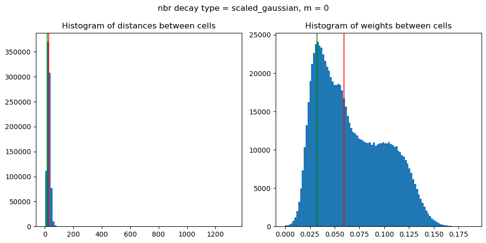
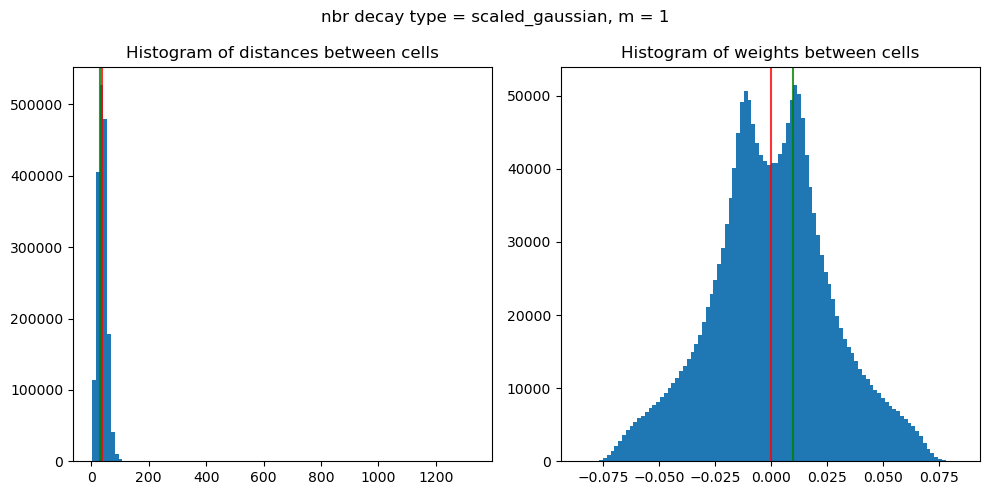
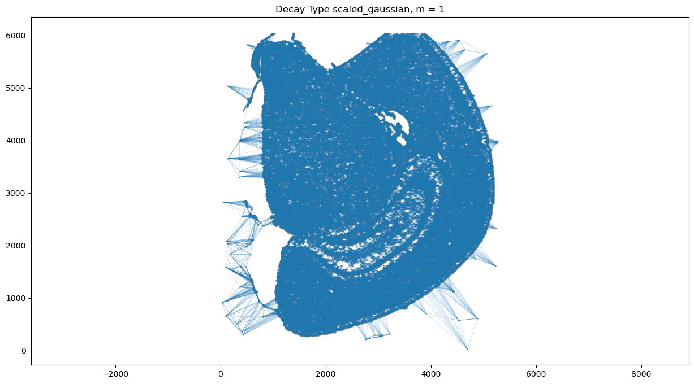
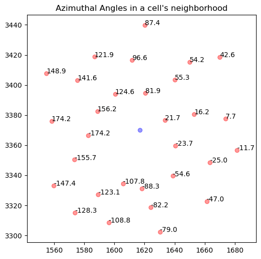
Generate BANKSY matrix
The BANKSY matrix considers a cells transcriptomic profile and local microenvironment (Figure 1).
As mentioned before, \(\lambda\) is a mixing parameter that controls the importance of cells’ own expression and neighborhood expression effects, it takes values from 0, being spatial information not used in the clustering, to 1, giving the maximum importance to the neighborhood expression.
o generate the BANKSY matrix, we proceed with the following:
Matrix multiply sparse CSR weights matrix with cell-gene matrix to get neighbourhood matrix and the AGF matrix if
max_m > 1Z-score both matrices along genes
Multiply each matrix by a weighting factor \(\lambda\) (We refer to this parameter as lambda in our manuscript and code)
Concatenate the matrices along the genes dimension in the form ->
horizontal_concat(cell_mat, nbr_mat, agf_mat)
Here, we save all the results in the dictionary (banksy_dict), which contains the results from the subsequent operations for BANKSY.
from banksy.embed_banksy import generate_banksy_matrix
# The following are the main hyperparameters for BANKSY
lambda_list = [0.6] # list of lambda parameters
banksy_dict, banksy_matrix = generate_banksy_matrix(adata_section, banksy_dict, lambda_list, max_m)Runtime Jan-05-2025-17-26
347 genes to be analysed:
Gene List:
Index(['2010300C02Rik', 'Abca7', 'Acsbg1', 'Acta2', 'Acvrl1', 'Adamts2',
'Adamtsl1', 'Adgrl4', 'Aldh1a2', 'Aldh1l1',
...
'Unc13c', 'Vat1l', 'Vcan', 'Vim', 'Vip', 'Vwc2l', 'Wfs1', 'Zfp366',
'Zfp536', 'Zfpm2'],
dtype='object', length=347)
Check if X contains only finite (non-NAN) values
Decay Type: scaled_gaussian
Weights Object: {'weights': {0: <58683x58683 sparse matrix of type '<class 'numpy.float64'>'
with 880245 stored elements in Compressed Sparse Row format>, 1: <58683x58683 sparse matrix of type '<class 'numpy.complex128'>'
with 1760490 stored elements in Compressed Sparse Row format>}}
Nbr matrix | Mean: 0.59 | Std: 1.72
Size of Nbr | Shape: (58683, 347)
Top 3 entries of Nbr Mat:
[[0.47219332 0. 0.48879083]
[0.43831427 0. 0.46033802]
[1.52354818 0.53943839 0.02748267]]
AGF matrix | Mean: 0.14 | Std: 0.29
Size of AGF mat (m = 1) | Shape: (58683, 347)
Top entries of AGF:
[[0.2776847 0. 0.16484106]
[0.22993549 0. 0.1525506 ]
[0.54008628 0.21168626 0.08738869]]
Ran 'Create BANKSY Matrix' in 0.14 mins
Cell by gene matrix has shape (58683, 347)
Scale factors squared: [0.4 0.4 0.2]
Scale factors: [0.63245553 0.63245553 0.4472136 ]
Shape of BANKSY matrix: (58683, 1041)
Type of banksy_matrix: <class 'anndata._core.anndata.AnnData'>
from banksy.main import concatenate_all
banksy_dict["nonspatial"] = {
# Here we simply append the nonspatial matrix (adata.X) to obtain the nonspatial clustering results
0.0: {"adata": concatenate_all([adata_section.X], 0, adata=adata_section), }
}
print(banksy_dict['nonspatial'][0.0]['adata'])Scale factors squared: [1.]
Scale factors: [1.]
AnnData object with n_obs × n_vars = 58683 × 347
obs: 'cell_id', 'transcript_counts', 'control_probe_counts', 'control_codeword_counts', 'unassigned_codeword_counts', 'total_counts', 'cell_area', 'nucleus_area', 'region', 'cell_labels', 'condition', 'time', 'batch_key', 'leiden_res0_25', 'leiden_res0_5', 'leiden_res1', 'cell_types', 'sample', 'x', 'y'
var: 'gene_ids', 'feature_types', 'genome', 'is_nbr', 'k'Reduce dimensions of each data matrix
We utilize two common methods for dimensionality reduction:
PCA (using
scikit-learn), we reduce the size of thematrix from \(3 * N_{genes}\) topca_dims. As a default settings, we reduce to 20 dimensions.UMAP (
UMAPpackage), which we use to visualize expressions of clusters in the umap space (2-D space).
## Define hyperparameters
resolutions = [0.1] # clustering resolution for UMAP
pca_dims = [20] # Dimensionality in which PCA reduces tofrom banksy_utils.umap_pca import pca_umap
pca_umap(banksy_dict,
pca_dims = pca_dims,
add_umap = True,
plt_remaining_var = False,
)Current decay types: ['scaled_gaussian', 'nonspatial']
Reducing dims of dataset in (Index = scaled_gaussian, lambda = 0.6)
==================================================
Setting the total number of PC = 20
Original shape of matrix: (58683, 1041)
Reduced shape of matrix: (58683, 20)
------------------------------------------------------------
min_value = -12.5038547814052, mean = -5.592029328484308e-16, max = 19.625682591950902
Conducting UMAP and adding embeddings to adata.obsm["reduced_pc_20_umap"]
UMAP embedding
------------------------------------------------------------
shape: (58683, 2)
AxisArrays with keys: reduced_pc_20, reduced_pc_20_umap
Reducing dims of dataset in (Index = nonspatial, lambda = 0.0)
==================================================
Setting the total number of PC = 20
Original shape of matrix: (58683, 347)
Reduced shape of matrix: (58683, 20)
------------------------------------------------------------
min_value = -20.638336181640625, mean = 6.7142519810659e-07, max = 36.85270309448242
Conducting UMAP and adding embeddings to adata.obsm["reduced_pc_20_umap"]
UMAP embedding
------------------------------------------------------------
shape: (58683, 2)
AxisArrays with keys: reduced_pc_20, reduced_pc_20_umapCluster cells using a partition algorithm
We then cluster cells using the leiden algorithm partition methods. Other clustering algorithms include louvain (another resolution based clustering algorithm), or mclust (a clustering based on gaussian mixture model).
from banksy.cluster_methods import run_Leiden_partition
seed = 0
results_df, max_num_labels = run_Leiden_partition(
banksy_dict,
resolutions,
num_nn = 50,
num_iterations = -1,
partition_seed = seed,
match_labels = True,
)Decay type: scaled_gaussian
Neighbourhood Contribution (Lambda Parameter): 0.6
reduced_pc_20
reduced_pc_20_umap
PCA dims to analyse: [20]
====================================================================================================
Setting up partitioner for (nbr decay = scaled_gaussian), Neighbourhood contribution = 0.6, PCA dimensions = 20)
====================================================================================================
Nearest-neighbour weighted graph (dtype: float64, shape: (58683, 58683)) has 2934150 nonzero entries.
---- Ran find_nn in 61.94 s ----
Nearest-neighbour connectivity graph (dtype: int16, shape: (58683, 58683)) has 2934150 nonzero entries.
(after computing shared NN)
Allowing nearest neighbours only reduced the number of shared NN from 37737077 to 2932178.
Shared nearest-neighbour (connections only) graph (dtype: int16, shape: (58683, 58683)) has 2861385 nonzero entries.
Shared nearest-neighbour (number of shared neighbours as weights) graph (dtype: int16, shape: (58683, 58683)) has 2861385 nonzero entries.
sNN graph data:
[30 18 12 ... 5 10 9]
---- Ran shared_nn in 2.37 s ----
-- Multiplying sNN connectivity by weights --
shared NN with distance-based weights graph (dtype: float64, shape: (58683, 58683)) has 2861385 nonzero entries.
shared NN weighted graph data: [0.17000748 0.17032101 0.1705099 ... 0.22193401 0.24232573 0.39033699]
Converting graph (dtype: float64, shape: (58683, 58683)) has 2861385 nonzero entries.
---- Ran csr_to_igraph in 0.83 s ----
Resolution: 0.1
------------------------------
---- Partitioned BANKSY graph ----
modularity: 0.78
7 unique labels:
[0 1 2 3 4 5 6]
---- Ran partition in 35.56 s ----
No annotated labels
Decay type: nonspatial
Neighbourhood Contribution (Lambda Parameter): 0.0
reduced_pc_20
reduced_pc_20_umap
PCA dims to analyse: [20]
====================================================================================================
Setting up partitioner for (nbr decay = nonspatial), Neighbourhood contribution = 0.0, PCA dimensions = 20)
====================================================================================================
Nearest-neighbour weighted graph (dtype: float64, shape: (58683, 58683)) has 2934150 nonzero entries.
---- Ran find_nn in 74.41 s ----
Nearest-neighbour connectivity graph (dtype: int16, shape: (58683, 58683)) has 2934150 nonzero entries.
(after computing shared NN)
Allowing nearest neighbours only reduced the number of shared NN from 51503123 to 2930357.
Shared nearest-neighbour (connections only) graph (dtype: int16, shape: (58683, 58683)) has 2820200 nonzero entries.
Shared nearest-neighbour (number of shared neighbours as weights) graph (dtype: int16, shape: (58683, 58683)) has 2820200 nonzero entries.
sNN graph data:
[22 17 26 ... 9 15 12]
---- Ran shared_nn in 2.98 s ----
-- Multiplying sNN connectivity by weights --
shared NN with distance-based weights graph (dtype: float64, shape: (58683, 58683)) has 2820200 nonzero entries.
shared NN weighted graph data: [0.19304595 0.19326815 0.19418376 ... 0.2103373 0.21252941 0.25186446]
Converting graph (dtype: float64, shape: (58683, 58683)) has 2820200 nonzero entries.
---- Ran csr_to_igraph in 0.91 s ----
Resolution: 0.1
------------------------------
---- Partitioned BANKSY graph ----
modularity: 0.83
11 unique labels:
[ 0 1 2 3 4 5 6 7 8 9 10]
---- Ran partition in 24.09 s ----
No annotated labels
After sorting Dataframe
Shape of dataframe: (2, 7)
Maximum number of labels = 11
Indices of sorted list: [1 0]
Expanding labels with ids: [0 1 2 3 4 5 6] so that ids range from 0 to 10
Label ids zerod: [0 1 2 3 4 5 6].
0 to be inserted between each id: [0 0 0 0 0 0 0]
4 extra rows to be randomly inserted: [1 1 0 0 1 1]
New ids: [ 0 2 4 5 6 8 10]
---- Ran expand_labels in 0.05 s ----
---- Ran match_labels in 0.01 s ----
Matched Labels| decay | lambda_param | num_pcs | resolution | num_labels | labels | adata | relabeled | |
|---|---|---|---|---|---|---|---|---|
| nonspatial_pc20_nc0.00_r0.10 | nonspatial | 0.0 | 20 | 0.1 | 11 | Label object:\nNumber of labels: 11, number of... | [[[View of AnnData object with n_obs × n_vars ... | Label object:\nNumber of labels: 11, number of... |
| scaled_gaussian_pc20_nc0.60_r0.10 | scaled_gaussian | 0.6 | 20 | 0.1 | 7 | Label object:\nNumber of labels: 7, number of ... | [[[View of AnnData object with n_obs × n_vars ... | Label object:\nNumber of labels: 7, number of ... |
Plot results
from banksy.plot_banksy import plot_results
import time
c_map = 'tab20' # specify color map
weights_graph = banksy_dict['scaled_gaussian']['weights'][0]banksy_path = f'./outputs/banksy_output/'
plot_results(
results_df,
weights_graph,
c_map,
match_labels = True,
coord_keys = coord_keys,
max_num_labels = max_num_labels,
save_path = os.path.join(banksy_path, 'tmp_png'),
save_fig = True, # save the spatial map of all clusters
save_seperate_fig = True, # save the figure of all clusters plotted seperately
)Saving figure at ./outputs/banksy_output/tmp_png/slideseq_mousecerebellum_nonspatial_pc20_nc0.00_r0.10_spatialmap.png
number of labels: 11
---- Ran plot_2d_embeddings in 0.00 s ----
number of labels: 11
---- Ran plot_2d_embeddings in 0.01 s ----
number of labels: 11
---- Ran plot_2d_embeddings in 0.00 s ----
---- Ran row_normalize in 0.00 s ----
matrix multiplying labels x weights x labels-transpose ((11, 58683) x (58683, 58683) x (58683, 11))
Saving figure at ./outputs/banksy_output/tmp_png/slideseq_mousecerebellum_scaled_gaussian_pc20_nc0.60_r0.10_spatialmap.png
number of labels: 7
---- Ran plot_2d_embeddings in 0.00 s ----
number of labels: 7
---- Ran plot_2d_embeddings in 0.01 s ----
number of labels: 7
---- Ran plot_2d_embeddings in 0.00 s ----
---- Ran row_normalize in 0.00 s ----
matrix multiplying labels x weights x labels-transpose ((7, 58683) x (58683, 58683) x (58683, 7))
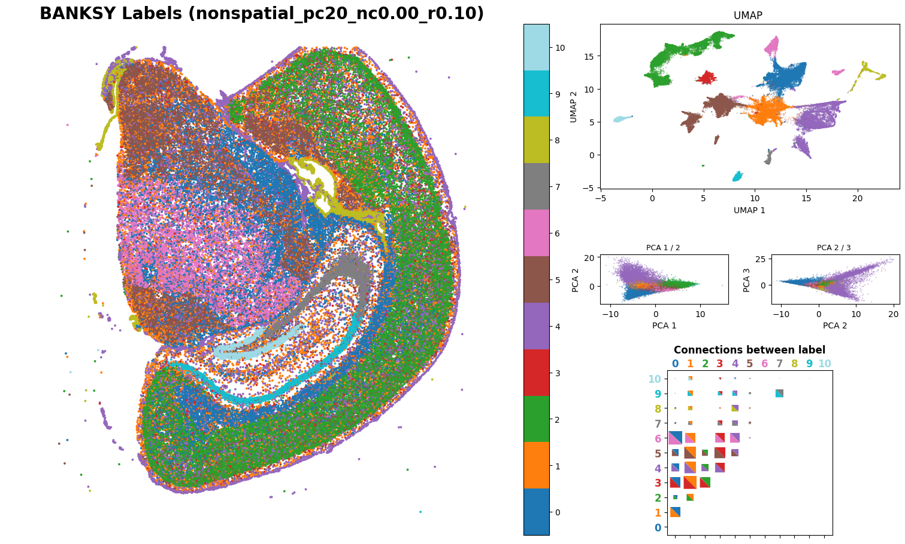
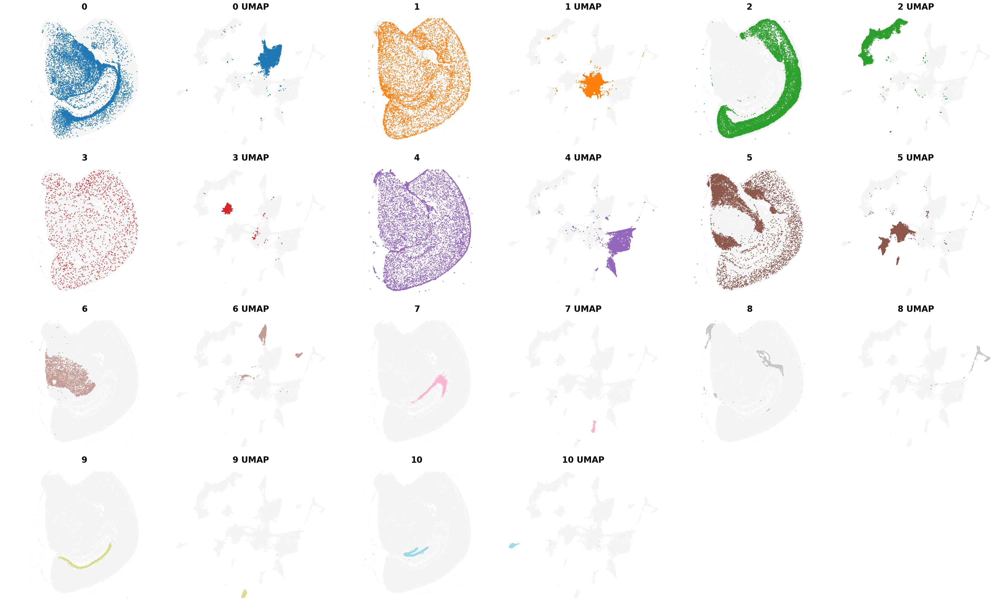
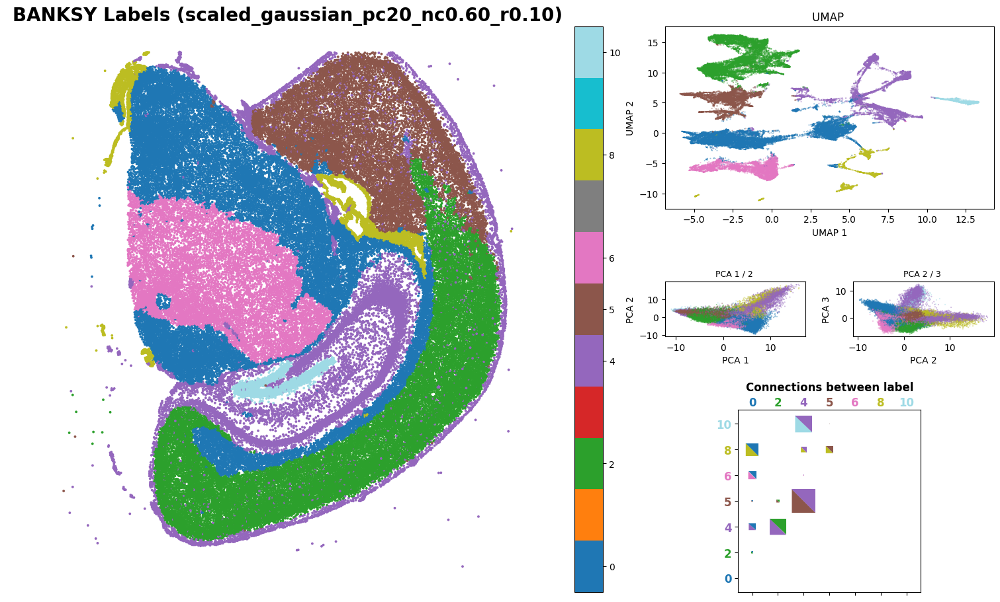
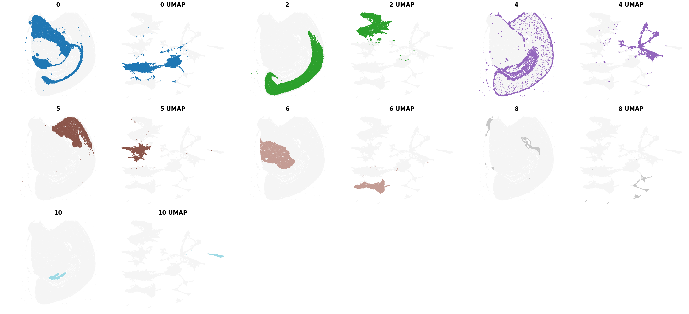
Investigate Cell Type composition in each Banksy-defined Spatial Domain
def plot_sd_vs_cell_type_composition(res_df,idx):
"""
Plots the cell type composition as a percentage across different SD (standard deviation) values.
The data is visualized as a stacked bar plot.
Parameters:
- results_df_lambda05: DataFrame containing the data with columns 'labels_scaled_gaussian_pc20_nc0.50_r0.10', 'class', and others.
- idx: string of column of interest in the DataFrame
Returns:
- None
"""
# Step 1: Add a 'Count' column to facilitate pivoting (each row contributes a count of 1)
res_df.obs['Count'] = 1
# Step 2: Create a pivot table with SD as the index, cell types as columns, and the sum of counts as values
pivot_df = res_df.obs.pivot_table(
index=idx, # Group by SD
columns='cell_types', # Columns represent cell types
values='Count', # Aggregate the 'Count' column
aggfunc='sum', # Sum up counts for each combination
fill_value=0 # Fill missing combinations with 0
)
# Ensure SD values are numeric
pivot_df.index = pivot_df.index.astype(float)
# Step 3: Convert counts to percentages for each SD
# Divide each row by the row sum to get percentages, then multiply by 100
pivot_df = pivot_df.div(pivot_df.sum(axis=1), axis=0) * 100
# Step 4: Set up the plot
fig, ax = plt.subplots(figsize=(10, 6)) # Define figure size
# Plot stacked bars
bottom = None # Keeps track of the cumulative height of the bars
for cell_type in pivot_df.columns: # Loop through each cell type
ax.bar(
pivot_df.index, # X-axis: SD values
pivot_df[cell_type], # Y-axis: Percentages for this cell type
label=cell_type, # Legend label
bottom=bottom # Stack on top of previous bars
)
# Update 'bottom' to include the current cell type's values
bottom = pivot_df[cell_type] if bottom is None else bottom + pivot_df[cell_type]
# Step 5: Add labels and title
ax.set_xlabel('SD') # Label for the x-axis
ax.set_ylabel('Cell Type Composition (%)') # Label for the y-axis
ax.set_title('SD vs. Cell Type Composition') # Title of the plot
ax.set_ylim(0, 100) # Set y-axis limits to [0, 100] to represent percentages
# Add legend
plt.legend(
title="Cell Type", # Title of the legend
bbox_to_anchor=(1.05, 1), # Position the legend outside the plot
loc='upper left' # Align the legend at the upper left corner
)
# Adjust layout to prevent overlap
plt.tight_layout()
# Step 6: Show the plot
plt.show()results_df| decay | lambda_param | num_pcs | resolution | num_labels | labels | adata | relabeled | |
|---|---|---|---|---|---|---|---|---|
| nonspatial_pc20_nc0.00_r0.10 | nonspatial | 0.0 | 20 | 0.1 | 11 | Label object:\nNumber of labels: 11, number of... | [[[View of AnnData object with n_obs × n_vars ... | Label object:\nNumber of labels: 11, number of... |
| scaled_gaussian_pc20_nc0.60_r0.10 | scaled_gaussian | 0.6 | 20 | 0.1 | 7 | Label object:\nNumber of labels: 7, number of ... | [[[View of AnnData object with n_obs × n_vars ... | Label object:\nNumber of labels: 7, number of ... |
results_df.loc[idx]['adata']AnnData object with n_obs × n_vars = 58683 × 1041
obs: 'cell_id', 'transcript_counts', 'control_probe_counts', 'control_codeword_counts', 'unassigned_codeword_counts', 'total_counts', 'cell_area', 'nucleus_area', 'region', 'cell_labels', 'condition', 'time', 'batch_key', 'leiden_res0_25', 'leiden_res0_5', 'leiden_res1', 'cell_types', 'sample', 'x', 'y', 'labels_scaled_gaussian_pc20_nc0.60_r0.10', 'Count'
var: 'gene_ids', 'feature_types', 'genome', 'is_nbr', 'k'
obsm: 'reduced_pc_20', 'reduced_pc_20_umap', 'spatial'idx='scaled_gaussian_pc20_nc0.60_r0.10'
results_df_lambda05 = results_df.loc[idx]['adata']
label_idx = f'labels_{idx}'
plot_sd_vs_cell_type_composition(results_df_lambda05, label_idx)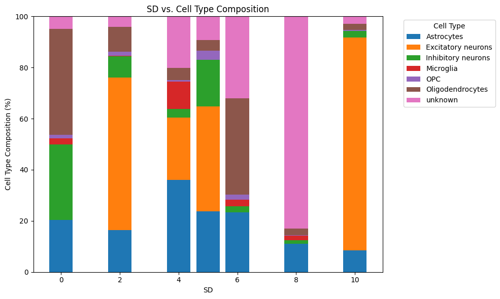
Compare CellCharter vs BANSKY
References
[1] Varrone, M., Tavernari, D., Santamaria-Martínez, A., Walsh, L. A. & Ciriello, G. CellCharter reveals spatial cell niches associated with tissue remodeling and cell plasticity. Nat Genet 56, 74–84 (2024).
[2] Singhal, V. et al. BANKSY unifies cell typing and tissue domain segmentation for scalable spatial omics data analysis. Nat Genet 56, 431–441 (2024).
[3] https://github.com/BrainOmicsCourse/BrainOmics2024/tree/main/3_Day3. Last access: 18.12.2024
[4] https://github.com/NBISweden/workshop-spatial/blob/main/labs/07b_spatial_domains.ipynb: Last access: 14.01.2025